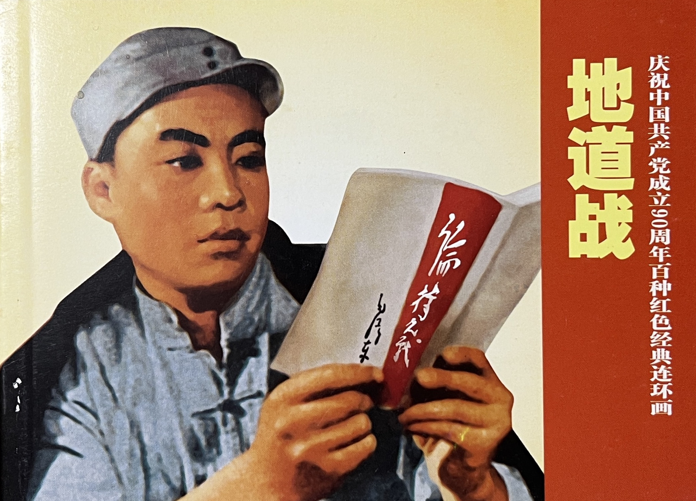

Team
The ChinaComx team, for now, is made up by the following people:
Lena Henningsen

Lena Henningsen is working on 20th and 21st century Chinese literature and culture. She is currently working on adaptations of the literature of Lu Xun into comics and setting up ChinaComx. She has also worked on unofficial entertainment fiction from the Chinese Cultural Revolution, on bestselling literature of the early 2000s, on Republican era music culture and on consumer culture in contemporary China and its literary reverberations. She studied at HU Berlin, Nanjing Normal University and Heidelberg University, where she completed both her MA and PhD. Before returning to Heidelberg, she spent the last years at Freiburg University as a Juniorprofessor and as the PI of the ERC funded project “READCHINA: The Politics of Reading in the People’s Republic of China”, at TU Munich as a research fellow and at Oxford University as an academic visitor. You can reach out to her via email
Damian Mandzunowski

Damian Mandzunowski is working on the intersections of politics, daily life, propaganda and visual culture in contemporary China. At ChinaComx, he is researching the politics of lianhuanhua and their local and international entanglements. He is also responsible for the graphic design and digital aspects of the project. He studied at LMU Munich (BA), Beijing Normal University, the University of Freiburg (MA), and Nanjing University. He is a collaborator in the project “Revisiting the Revolution: Engaging Chinese Scholarship through Collaborative Translation”. He joins Heidelberg University after working on two ERC-projects in Freiburg — in 2018-2019 at “The Maoist Legacy” and in 2019-2023 at “READCHINA” — where he is also finishing his PhD dissertation on political study and other collective reading practices in the PRC after 1949. He has previously worked extensively on caricatures of the Gang of Four created after 1976. You can find him on X or reach out to him via email.